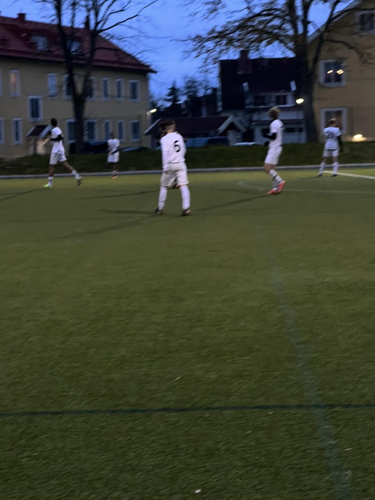

"En fascinerande fotbollskarriär präglad av passion och målmedvetenhet. Från de första sparkarna som ung talang till att bli en målrik och dedikerad lagkapten. Varje match var en chans att utvecklas och visa ledarskap. Mina fotspår på planen är fyllda med triumfer och motgångar, men alltid med stolthet och kärlek till spelet. Lagets framgångar och individuella prestationer kastar ljus över åren av träning och hängivenhet. Att vara en del av fotbollsvärlden har varit en oförglömlig resa, där varje ögonblick har format och berikat min passion för detta vackra spel."
